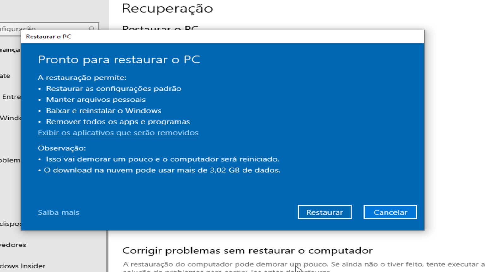

Instalando Windows Pela Nuvem
A nova versão do Windows 10 20H1 traz uma função muito aguardada pelos usuários. Essa mesma função já existe desde a versão 1507 do Windows 10, no entanto ela estava escondida. Já pensou instalar o Windows a partir dos servidores da Microsoft? É justamente isso que essa função irá fazer, confira abaixo todos os detalhes de como usar essa ferramenta de restauração.

Download Windows 10 20 H1
Versão dessa Build 19041.172, no momento a Microsoft não disponibilizou o download oficial assim os links abaixo são oficiais, essas ISOs são liberadas para empresas no entanto são versões finais, no entanto, recomendamos você esperar essa versão no canais para usuários finais. A ISO abaixo contém todas as versões comuns para Windows 10.
20H1 x64 Link 2 e 3
20H1 x86 Link 2
Ativação Digital
Você possui alguma chave do Windows? Abra o CMD com privilégios de administrador, cole o comando abaixo substituindo os “xxxxx-xxxxx-xxxxx-xxxxx” pelo serial que você tem, se você instalou o Windows 10 Pro, só o serial dessa mesma versão irá funcionar, caso não tenha o serial da Pro e sim da Home Single Language e você tenha instalado a Pro, você terá que formatar seu PC com a versão correspondente ao serial que você tem.
cscript slmgr.vbs /ipk xxxxx-xxxxx-xxxxx-xxxxx
cscript slmgr.vbs /lotro.cc
cscript slmgr.vbs /ato
Baixe o comando pronto no link abaixo, versão Pro e Home e obtenha a licença digital.
Script
Como funciona a licença digital?
Baixe o script no link abaixo, use ele apenas se você não estiver usado nenhum tipo de “ativador ilegal em seu PC”. O mesmo só funciona com versões do Windows 10, execute ele como administrador com a internet habilitada. Prefira usar esse método em computadores que você recém formatou. Para mais informações de como funciona a licença digital em seu computador com Windows 10 veja esse artigo no site da Microsoft , clique aqui.
Digital License
Windows funcionando
A ideia aqui é restaurar o computador usando uma ISO do mesmo sistema instalado na máquina. Por exemplo se no seu PC você está rodando a build 2004 19041.172 e usar o recurso download da nuvem o sistema baixará a mesma versão que você está usando. Para fazer esse procedimento acesse configurações do seu computador, depois configurações>atualização e segurança>recuperação. Pressione o botão começar agora. A tela seguinte irá perguntar qual opção você pode escolher, você pode escolher manter seus arquivos ou remover tudo, escolha a opção de acordo com sua necessidade.
Na tela seguinte escolha download da nuvem, a opção “instalação local” necessita que você tenha uma mídia como DVD/Pen drive boot pronta. Para escolher a opção download da nuvem você vai precisar ter ao menos 4GB de espaço em disco.

Na tela abaixo é exibido alguns detalhes. Clique avançar.
A tela final é mostrado confirmando suas escolhas. Dica; se você estiver usando dispositivos portáteis como notebooks, ultrabooks o melhor é você conectar ele no carregador pois o processo pode demorá e o mesmo pode ficar sem bateria. Clique em restaurar.
Agora é com sua internet é máquina, tudo será feito automaticamente, o computador será reiniciado várias vezes. Quando o processo terminá você terá sua máquina redondinha esperando você configura-la assim como antes, programas e outros.
Resumo
Como já mencionado essa função de instalar pela nuvem baixa a mesma versão que o usuário tem em seu computador, essa é uma estrategia da Microsoft, pois usando a mesma versão em que o usuário já está acostumado a probabilidade de ter bugs são minimas.
Quando Windows não liga
Sabe aquele problema que impedi o Windows de ligar? Então se o mesmo estiver com uma das versões 2004 (20H1) ele poderá acessa a tela de reparação e fazer o procedimento de reinstalação do sistema usando a nuvem. Quando você chegar nessa tela escolha a opção solução de problemas.
Clique restaurar o PC.

Escolha a melhor opção pra você, em nosso exemplo vamos escolher remover tudo.
Ao fazer isso a tela abaixo (pode aparacer, e as vezes não). Nela você pode escolher entre “remover tudo do disco onde está o Windows” ou também remover tudo de outras partições ou discos que existem no computador. Em nosso exemplo vamos escolher a primeira opção deixando outros discos intactos.
Na tela seguinte vamos escolher download da nuvem, lembrando que a outra opção”reinstalação local” é necessário uma mídia como DVD/pen drive boot.
Na tela seguinte vamos escolher limpar a unidade, novamente escolha a melhor opção para você. Nota; escolhendo a opção “limpar a unidade” apenas a unidade que estiver Windows será apagada, isso significa que se o disco possuir partições elas serão mantidas, não alterando ou removendo os arquivos contidos nelas. O mesmo vale se seu computador tiver outros discos.
Por fim clique redefinir e aguarde o processo começar. Seu computador vai reiniciar várias vezes.
O processo pode demorar muito, pois o mesmo irá baixar o sistema novo, redefinir as configurações e instalar o sistema.
Etapa final
Nas próximas você usuário será acionado, pois precisará configurar o nome da máquina, senha e configurações de privacidade do Windows. No final o sistema estará pronto para ser usado.